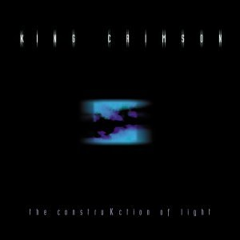
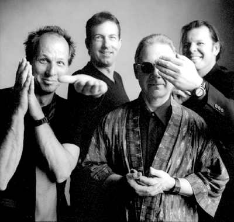

|

The construKction of light (La construcción de la luz)
Editado en 2000, es el primer album post-ProjeKcts, y
realmente merecía ser firmado como King Crimson. Quizás por eso está la cuarta parte de Larks´
tongues in aspic, y Fractured sea... ¿la segunda parte del Fracture
del '74?. Pero si bien en Fractured Fripp realiza fraseos similares a
los del viejo tema, el clima y el entorno son totalmente distintos; Fracture
era macabro, mientras su descendiente tiene luz e incluso dulzura, y si
bien su parte media es potente, no penetra en el clima tenso-amenazante de su predecesor. En Larks´ IV las guitarras hacen diálogos entre duros
acordes al estilo del tema Thrak del '95. El tema que le da nombre al disco
comienza con una estupenda y compleja intro de Gunn con su stick, y luego
evoluciona desde una forma musical iniciada con el tema Discipline de
1981; esto, sumado a algunas partes de Fractured en el mismo sentido, evidencia que este cuarteto retomó los fraseos punteados interconectados entre las guitarras,
la mejor veta de la formación de los ochenta. En contraste, ya no hay
rastros del rock-new wave de aquella época, es el disco con menos pop de
todos en los que participó Belew, y no tiene ninguna balada o suave canción
(algo infaltable en todos los discos anteriores de la banda). La letra de ProzaKc blues, un divertido y potente... ¿blues? (es como
un Ladies of the road del siglo 21), es una reacción a las críticas que
algunos fans escribieron en el sitio web Elephant-talk, menospreciando la voz de
Belew para la banda; tal vez por esa razón, además, Belew tergiversó su voz, dándole un color similar al de un blusero negro
norteamericano (específicamente, al de la voz de Hooter J. Johnson). Muy bueno Into the
frying pan, hecho en base al potente tema ProjeKction, creado por ProjeKct
4 y editado en la caja de los ProjeKcts el año anterior, recreado para este
album con agregado de letra y canto de Belew. Excelente instrumental Heaven and Earth,
firmado como ProjeKct X, grabado
durante ensayos simultáneamente a las sesiones de los temas de este disco.
Formación
|
Temas
|
| Robert Fripp: guitarra |
1 - ProzaKc blues (letra)
5'28 |
| Adrian Belew: guitarra y voz |
2 - The construKction of light 8'39 |
| Trey Gunn: stick y guitarra
barítona |
3 - Into the frying pan (En la sartén) 6'53 |
| Pat Mastelotto: percusión |
4 - FraKctured (Fracturado) 9'05 instrumental |
| |
5 - The world's my oyster soup kitchen floor wax museum
(El mundo es mi sopa de ostra, piso de cocina, museo
de cera) 6'22 |
| |
6 - Lark's tongues in aspic (parte IV) 9'07
instrumental |
| |
7 - Coda: I have a dream (Tengo un sueño)
3'51 |
| |
8 - Heaven and Earth (El cielo y la Tierra)
7'49 instrumental |
Música firmada por el grupo - Letras de
Belew
-
La letra de Coda retoma el tono triste y de
resignación del Epitaph del '69. "A finales del siglo XX, Belew
quería escribir algo que evocara el espíritu de la época, los
acontecimientos históricos que habían entrado en la conciencia colectiva.
Con un apasionado interés por la historia moderna, Belew se dedicó a
elaborar listas de los acontecimientos más importantes del siglo, grabando
la gran cantidad de programas de televisión que marcaban la transición
histórica de una época a otra. «Al
mirar atrás a la segunda mitad del siglo XX, lo que más destaca, por
desgracia, son las cosas malas. Guerras, muertes, crímenes, etc.»,
relata el guitarrista. Para entonces, la pieza se titulaba I Have A Dream,
tomada del discurso de Martin Luther King en la Marcha por los Derechos
Civiles en Washington, el 28 de agosto de 1963." (Sid Smith, de su
libro In the court of King Crimson). En principio esta pieza era un
tema acústico separado, con agregados eléctricos de Fripp (como contrapeso
al clima denso general del album), pero luego la banda opctó por la toma
grabada por la banda como coda de Larks' IV. La versión acústica de
dúo, vetada, sería ofrecida años más tarde por DGM de forma digital en
su sitio Web.
-
Durante la grabación de The world's my oyster soup...
Gunn propuso a Fripp agregar sonido piano con su guitarra, y al escuchar el
resultado podemos imaginar cómo sonaría Keith Tippett si se le hubiera
invitado a tocar sobre esa música metalera estruendosa.
-
En momentos de pausa durante las sesiones de
grabación del album, Mastelotto y Gunn invitaban a los guitarristas a
improvisar en otras direcciones, porque deseaban explorar lugares a los que
Fripp y Belew, como compositores, no se atrevían. Se convirtió en una
banda paralela, con los mismos integrantes pero con otra búsqueda musical,
y la llamaron ProjeKct X, como legado de los subgrupos anteriores que
creaban música que pudiera servir para piezas elaboradas del rey carmesí.
Así surgió el tema Heaven and Earth, base compuesta por Mastelotto
y Gunn con solos de los guitarristas agregados. Cierra el album aportando
algo diferente; la razón es que los otros temas estaban elaborados
principalmente desde las guitarras, mientras que éste surgió desde la
sección rítmica. Durante el mismo año, DGM editó un album con el mismo
nombre (Heaven and Earth), firmado como ProjeKct X, con otra versión del
tema y varias improvisaciones grabadas
durante las sesiones de este album de Crimson.
 
|
 The construKction of light
The construKction of light